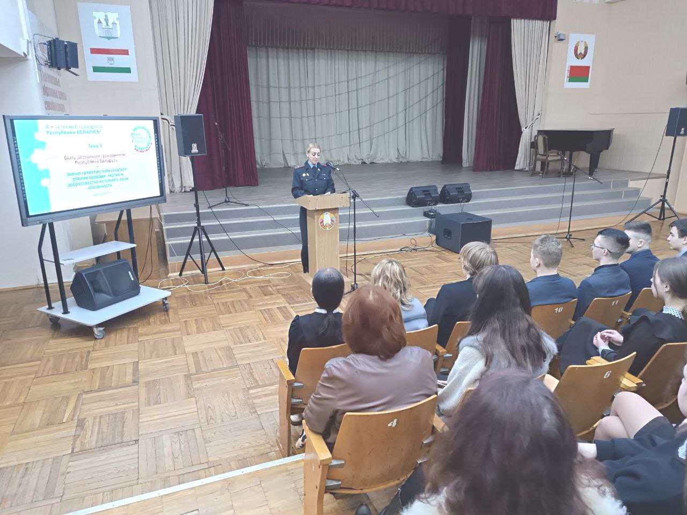
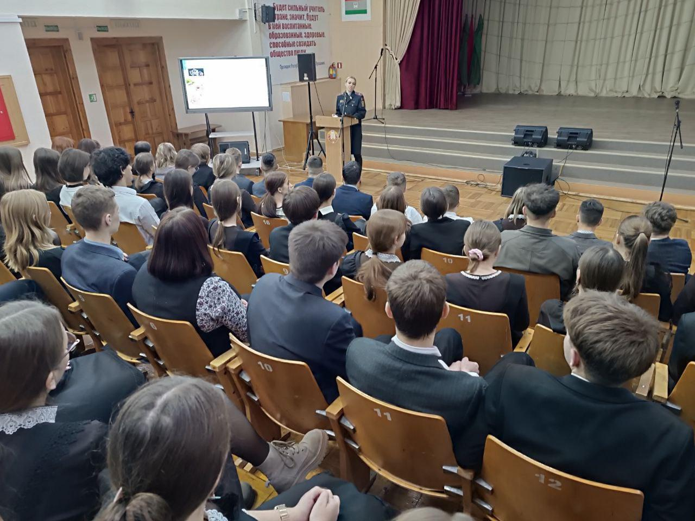

БЫТЬ ДОСТОЙНЫМ ГРАЖДАНИНОМ РЕСПУБЛИКИ БЕЛАРУСЬ – ЗНАЧИТ ГРАМОТНО ПОЛЬЗОВАТЬСЯ СВОИМИ ПРАВАМИ, ЧЕСТНО И ДОБРОСОВЕСТНО ИСПОЛНЯТЬ СВОИ ОБЯЗАННОСТИ
27 ноября прошла очередная встреча учащихся 10-11-х классов в рамках информационно-образовательного проекта «ШАГ» по теме: «Быть достойным гражданином Республики Беларусь – значит грамотно пользоваться своими правами, честно и добросовестно исполнять свои обязанности». Спикером мероприятия выступила старший оперуполномоченный отдела уголовного розыска криминальной милиции Борисовского РУВД майор милиции Юлия Зыбкина.

Встреча была организована в форме баркемпа, что позволило в свободной форме обсудить вопросы, касающиеся конституционных прав и обязанностей гражданина Республики Беларусь, гарантий белорусского государства по защите прав и свобод граждан, обязанностей учащихся, прав ребенка, взаимосвязи прав и обязанностей.
В завершении мероприятия Юлия Борисовна остановилась на теме правонарушений в сфере кибербезопасности и ответила на вопросы учащихся – как не стать жертвой киберпреступников. Не осталась без внимания и профориентационная работа. Всем желающим связать свою будущую жизнь с правоохранительными органами Юлия Борисовна оставила рекламные буклеты и контактные номера, по которым ребята могут получить компетентную информацию.
